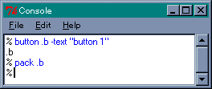
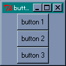

Windows が普及するようになって、パソコンを使う人は大幅に増えましたが、逆にプログラミングを楽しむ人は減っているようです。パソコンはソフトがなければただの箱、といわれますが、Windows にはたくさんのアプリケーションやツールが市販されているので、目的に合ったソフトを購入すれば、わざわざプログラムを作らなくてもパソコンを使うことができます。
ところが、優秀なアプリケーションでも長く使っているとなにかしらの不満が出てくるものです。一般のユーザーであればバージョンアップされるまで待つことになるでしょうが、ちょっとしたプログラムを作ることができれば、使い勝手を大幅に改善できる場合もあるのです。小さなツールであれば、個人でもプログラミングすることは十分に可能ですし、なによりも自分の好みにあわせて作ることができます。インターネットで見つけたツールが、いまいち手に馴染まないのであれば、あなたもプログラミングに挑戦してみましょう。
そうはいっても、プログラミングは難しい、と考えている人が多いと思います。特に、Windows のような GUI (Graphical User Interface) に対応したアプリケーションを作ることは、以前の CUI (Command User Interface) に比べて、相当の労力を必要とします。最新の開発環境を用意すれば、Windows の機能を簡単に使えるようになりますが、初心者にとって付属のマニュアルだけでは心細いので（理解できないともいう）、いろいろな参考書や資料が必要となります。つまり、開発環境を整えるにも、それなりの出費を覚悟しないといけません。
GUI の難しさに加え、懐具合も気にしなくてはならないようでは、プログラミングを楽しむどころではない、という方も多いでしょう。X68000 のように、フリーで使用できる開発環境が Windows にもあれば、それも手軽に GUI アプリケーションを作れるのであれば、プログラミングに挑戦してみよう、というユーザーもいるはずです。実は、そのような用途にぴったりな開発環境があるのです。それが Tcl/Tk です。
Tcl/Tk (ティクルティーケイ) は、UNIX の X Window, Mac OS, MS Windows で、GUI アプリケーションを作成することができます。Tcl/Tk は、1988 年に John K. Ousterhout 博士によって開発されました。Tcl は Tool Command Language の略で、もともとはアプリケーションに組み込むためのコマンド言語として設計されたのですが、GUI の部品を集めた Tk (Tool Kit) と組み合わせることで、Tcl/Tk だけで GUI アプリケーションを簡単に作ることができるようになりました。わずか十数行のプログラムでも、十分に実用となるのですから驚きです。そして、なんといってもフリーで使用できるのが素晴らしいですね。それでは、簡単に Tcl/Tk の世界を紹介していくことにしましょう。以下では Windows 版を中心に解説しますが、Macintosh でも X Window でも基本は同じです。
最初に説明したように、Tk は GUI の部品を集めたものです。Tk を操作するためのプログラミング言語が Tcl です。Tcl はインタプリタ方式の言語です。Windows 版の標準の配布キットには、tclsh と wish というアプリケーションが含まれています。tclsh は Tcl 言語のみのインタプリタで、これに Tk を加えたものが wish (WIndow SHell) です。GUI アプリケーションを実行する場合は、こちらを使います。wish を単独で起動すると、コンソールと wish のウィンドウが現れます。コンソールからプログラムを入力して実行することができるので、動作がよくわからない場合は手軽に試して確認することができます。
Tcl はＣ言語や BASIC のような普通のプログラミング言語とはちょっと違います。その特徴をひと言でいえば、UNIX で使用されているシェル、bash や csh のシェルスクリプトを拡張した言語、といえるでしょう（MS-DOS でいえばバッチ処理に相当しますが、シェルスクリプトの方がずっと高機能です）。
ところで、旧 Oh!X の読者であれば、シェルスクリプトを拡張したコマンド言語という説明だけで、Tcl に対する大まかなイメージをつかんでもらえるでしょうが、Windows 全盛のこの時代、MS-DOS プロンプトなんて立ち上げたこともない、当然ながらバッチ処理はわからない、それ以前にコマンドってなに？ という読者もいると思いますので、簡単に解説しておきます。
コマンドはアプリケーションプログラムのことと考えてください。Windows の場合、アプリケーションを実行するにはアイコンをダブルクリックすればいいですね。ところが CUI の場合、ユーザーはコンピュータに対する命令（コマンド）をキーボードから入力します。アプリケーションを実行する場合は、そのファイル名をキーボードから入力します。そして、ユーザーが入力した命令を処理するプログラムが「シェル」なのです。コマンドは次のような形式で入力します。
コマンド名 引数１ 引数２ ...
最初はコマンド名で、その後ろに引数が必要になる場合もあります。引数にはコマンドのオプションを指定するフラグがあります。MS-DOS では「 / 」の後ろの 1 文字で表しますが、UNIX 系の OS では「 - 」の後ろの 1 文字で表す場合が多いようです。このほかにも引数でファイル名やディレクトリ名、あるいは特別なオプションを指定する場合もあります。これは、コマンドによって異なります。
コマンド名や引数の間は空白で区切ります。そして最後にリターンキーを入力すると、シェルがこのコマンドを実行します。
Tcl でのプログラミングも、これが基本的な形式です。たとえば、ウィンドウにボタンを表示してみましょう。wish のコンソールから次のように入力してください。
% button .b -text "button 1" .b % pack .b %
wish のウィンドウにボタンが現れましたね。実際にボタンを押してみてください。マウスの左ボタンを押すと、ウィンドウ上のボタンがへこみ、マウスの左ボタンを離すと、ウィンドウ上のボタンは元の形に戻ります。たった 2 行で、ここまでのことができるのです。
Tk では GUI の部品をウィジェット (widget) と呼びます。この例では、ボタンウィジェットを使いましたが、このほかにも Tk にはさまざまなウィジェットが用意されています。配布キットには Widget Tour というウィジェットを紹介するデモプログラムが用意されているので、ひととおり眺めてみてください。その機能の多さに驚かれることでしょう。
button はボタンを作るコマンドで、そのウィジェット名が .b となります。-text はボタンに表示される名前を指定するオプションです。Tcl/Tk は出身地が UNIX なので、オプションの指定は - から始まります。省略された場合は、デフォルトの値が使われます。実際に -text を省略すると、名前のないボタンが出現します。pack はウィンドウにボタンを詰め込むコマンドです。いまはボタンを表示するだけですが、押したときの動作も指定することができます。
この例からもわかるように、Tcl では最初にコマンド名、その後ろに引数やオプションが与えられます。まさしく、シェルでのコマンド入力とそっくりですね。該当するコマンドがない場合はエラーとなります。作られたウィジェット名 .b は、そのウィジェットを操作するためのコマンドとして働きます。これをウィジェットコマンドと呼びます。これはあとで詳しく説明します。
ところで、コンソールから複数のコマンドを入力するのは面倒ですね。複数のコマンドをまとめてひとつのコマンドとして実行するのがバッチ処理であり、シェルスクリプトなのです。MS-DOS の場合、拡張子 bat のファイルに書かれているコマンドは順番に実行されていきます。バッチファイルの中では、コマンド以外にも制御命令を使うことができます。DOS のバッチファイルで使用できる命令は貧弱なものですが、UNIX のシェルスクリプトでは一般のプログラミング言語に負けないくらいの命令が用意されています。
Tcl/Tk の場合は、拡張子が tcl のファイルにプログラムを書きます。Tcl/Tk が正常にインストールされると、このファイルと wish が対応づけられます。あとは、このファイルをダブルクリックするとプログラムが実行されます。たとえば、button0.tcl に次のコマンドを書きましょう。
リスト : ボタンの表示 (button0.tcl) button .b1 -text "button 1" button .b2 -text "button 2" button .b3 -text "button 3" pack .b1 .b2 .b3 ボタンを 3 つ表示してみた
このファイルをダブルクリックするとボタンが 3 つ表示されます。この場合、wish のコンソールは表示されません。このように、Tcl/Tk で作ったプログラムは、一般のアプリケーションと同じように実行することができます。
ここからは、Tcl を中心に話を進めていきましょう。Tcl の特徴は、データを文字列として扱うことです。文字列は空白かタブで区切られ、行の最初の文字列がコマンド名となります。該当するコマンドがない場合はエラーとなります。コマンドに渡される引数も文字列で渡されます。数値が必要な場合は、コマンド内部で文字列から数値に変換されます。このとき、数値に変換できない場合はエラーとなります。
数値データは、整数と実数 (浮動小数点数) が用意されています。整数値の範囲は -2147483648 から 2147483647 まで、つまり 32 ビット整数です。これは普通のＣ言語での int と同じです。0 から始まる整数は 8 進数とみなされ、0x から始まる整数は 16 進数とみなされます。実数値は、約 -1e308 から 1e308 まで、普通のＣ言語での double と同じ値です。表記法はＣ言語と同じで、1e308 は 1E308 でも 1E+308 でも同じ値として認識されます。
Tcl では四則演算を行うにもコマンドが必要になります。expr は与えられた引数全体を式として評価し、その結果を文字列として返します。
% expr 1 + 2 3 % expr 3 * 4 12
expr の場合、数値と演算子の間は空白で区切らなくても正しく評価されます。使用できる演算子はＣ言語とほぼ同じで、+ - * / % などの算術演算子のほかに、ビット演算子も用意されています。また、sin(), cos() などの数学関数も使うことができます。詳細は expr のヘルプを参照してください。
データを格納する入れものを「変数」といいます。変数にデータを入れることを代入といい、Tcl/Tk では set コマンドを使います。
% set a 2 2 % set a 2
変数 a に 2 を代入しました。Tcl/Tk では、英大文字と英小文字を区別します。a と A では異なる変数になるので注意してください。変数を使う場合、あらかじめ宣言しておく必要はありません。set で変数に代入するデータを省略すると、その変数に格納されている値を返します。
変数から値を取り出すには、変数名の前に $ をつけます。これを「変数置換」といいます。
% set b $a 2 % set c a a
変数 a の値を b に代入します。a の前に $ がついているので、a に格納されている値 2 に置き換えられてから set コマンドが実行され、b に 2 が代入されます。最後の例では、$ がついていないので、a を文字列としてそのまま c に代入します。
コマンドの評価結果を利用する場合は「コマンド置換」を使います。たとえば、expr の結果を変数に代入してみましょう。
% set a [expr 2 + 3] 5 % set b [expr $a * 4] 20
コマンド置換はブラケット ( [ ] ) で表します。ブラケットの中で最初の文字列がコマンドとなります。コマンド置換は、ブラケット内のコマンドを評価して、ブラケットをその結果に置き換えます。最初の例では、expr 2 + 3 が評価されて、その結果である 5 に置き換えられます。それから set コマンドが評価され、変数に 5 が代入されます。変数置換はブラケット内でも有効です。次の例では、最初に変数 $a の置換が行われ、それから expr 5 * 4 が評価されます。そのあとで set コマンドが評価され、変数 b に 20 が代入されます。
文字列に空白を含めたい場合は、ダブルクォート ( " ) で囲みます。これはすでにボタンを表示するプログラムで使っています。ダブルクォートの内側でも、変数置換やコマンド置換が行われます。これを避けるにはエスケープ記号 \ を使います。
% set c "a + b = [expr $a + $b]" a + b = 25 % set d "a + b = \[expr \$a + \$b]" a + b = [expr $a + $b]
最初の例はコマンド置換が行われるので、$a と $b を足した値、25 に置き換えられ、変数 c には文字列 "a + b = 25" が代入されます。ブラケット [ と $ の前に \ をつけると、置換が行われずにそのままの文字列が変数に代入されます。このほかにもエスケープ記号 \ は、\n と \t で改行やタブを表したり、長いコマンドを複数行に分けて書く (継続行) ためにも使います。
配列は複数のデータを格納するデータ構造です。一般に、配列の要素は正の整数値を使って指定しますが、Tcl では文字列で要素を指定します。いわゆる Perl や awk で使われている連想配列のことで、Ｃ言語や BASIC の配列とは違います。配列は名前の後に ( ) をつけ、その中にインデックス名を入れます。値を取り出すときは変数と同じく、名前の前に $ をつけます。変数と同様に、あらかじめ配列を宣言しておく必要はありません。次の例を見てください。
% set table(1) 10 10 % set table(abc) $table(1) 10 % set x 1 1 % set y 2 2 % set table($x,$y) 100 100 % set table(1,2) 100
table(1) に 10 を代入します。この場合でも 1 は数値ではなく文字列として扱われています。次の例では、table(1) の値を table(abc) にセットします。
また、インデックス名に変数を使うこともできます。table($x,$y) は変数置換が行われ、table(1,2) に 100 が代入されます。この場合、インデックス名は 1,2 という文字列となります。この機能を使って多次元配列をシミュレートすることができます。これは Perl や awk でも使われるテクニックです。
リストは配列と同様に、複数のデータを格納することができますが、連想配列とは違い、要素を順番に並べただけのデータ構造です。リストは全体を { } で括り、要素を空白文字 (空白、タブ、改行など) で区切ります。
% set a {10 20 30 40 50}
10 20 30 40 50
% set b {abc def ghi jkl}
abc def ghi jkl
% set c {abc {def ghi} jkl}
abd {def ghi} jkl
最後の例のように、リストの中にリストを入れることができます。ところで、リスト処理というと Lisp というプログラミング言語が有名ですね。Tcl ではリストを操作するコマンドが用意されていますが、Lisp のようなプログラミングができるわけではありません。Tcl ではリストを頻繁に使いますが、それは if や while といった制御構造を実現するコマンドに、引数を渡すために用いられるからです。
Tcl の場合、リストの中では変数置換やコマンド置換は行われず、エスケープ記号 \ も意味を失います。改行で要素を区切った場合も、改行コードがそのまま格納されます。簡単な if を使って説明しましょう。if は条件分岐を行うコマンドです。次の例を見てください。
if {$i < 0} {set i 0}
if は最初の引数を条件式として評価し、それが成立した場合は 2 番目の引数を評価します。関係演算子はＣ言語と同様に、< (小さい)、<= (以下)、> (大きい)、>= (以上)、== (等しい)、!= (等しくない) が用意されています。演算の結果は、条件を満たすならば 1 (真)、そうでなければ 0 (偽) となります。関係演算子は文字列にも適用することができます。
引数はリストとして渡されていることに注意してください。もしリストを使わないと、第 1 引数が $i、第 2 引数が < になってしまいます。set i 0 もリストでなければいけません。そうしないと、if の第 2 引数は set だけになってしまいエラーとなります。また、次のように書いてもエラーになります。
if {$i < 0}
{
set i 0
}
この場合、if の第 2 引数はなしと判断されエラーとなります。第 2 引数は、次のように if と同じ行から書いてください。
if {$i < 0} {
set i 0
}
複数のコマンドを実行したい場合は、コマンドを改行で区切りましょう。
if {$i < 0} {
set i 0
set j 1
set k 2
}
Tcl はシェルと同様に、基本的には 1 行を 1 コマンドとして認識します。リストの中でも、改行で区切られた要素までをコマンドとして認識します。もしも、1 行に複数のコマンドを書きたい場合はセミコロン ( ; ) で区切ります。
if {$i < 0} {
set i 0; set j 1; set k 2
}
これは UNIX 系のシェルと同じ使い方です。このほかに、if は else, elseif を使うことができます。
if {$i < 0} {
set i 0
} elseif {$i < 10} {
set i 10
} else {
set i 100
}
elseif は何個でもつなげることができます。ただし、次のような書き方ではエラーになります。
if {$i < 0} {
set i 0
}
else {
set i 10
}
この場合、else の無い if と判断され、次の else がコマンド名と解釈されるのです。このような書き方に慣れているユーザーには、ストレスが溜まるところでしょうが、Tcl を使うときは我慢してください。
次は、繰り返しを行うコマンドを説明します。最初は while です。
while 条件式 ループ本体
while は第 1 引数を条件式として評価し、それが成立している間、第 2 引数のループ本体を繰り返し実行します。引数はリストで渡したほうが安全です。次の例を見てください。
while {$n > 0} {
.....
incr n -1
}
変数 n に格納されている回数だけ処理を繰り返します。incr は第 1 引数の変数に第 2 引数の値を足すコマンドです。第 2 引数が省略されると +1 されます。Ｃ言語の演算子 += や ++ に相当します。ところで、incr と逆の働きをするコマンド decr もありそうなものですが、Tcl では用意されていないので注意してください。この処理を次のように書くと無限ループになります。
while $n {
.....
incr n -1
}
ほかの言語に慣れている方は、n が 0 になれば条件が不成立になるので繰り返しが終了する、と思うでしょうが、Tcl の場合、引数は変数置換が行われてからコマンドに渡されるので、条件式はただの数値になってしまうのです。したがって、条件式の値は変化せず無限ループになるのです。ここは、変数置換が行われないリストに格納しておかないと正常に動作しないのです。Tcl の場合、条件式は必ずリストで渡すと、覚えておいたほうがいいでしょう。
次は for コマンドを説明します。
for 初期化式 条件式 更新式 ループ本体
for 自体の働きはＣ言語と同じですが、引数はリストで渡します。次の例を見てください。
for {set i 0} {$i < 10} {incr i} {
.....
}
これを while で書き換えると次のようになります。
set i 0
while {$i < 10} {
.....
incr i
}
for は while に比べ、繰り返しを制御するコマンドをまとめて書ける、という長所があります。もちろん、どちらのコマンドを使うかはプログラマの自由で、わかりやすい方を選べばよいのです。
もうひとつ繰り返しを行うコマンドを説明します。UNIX 系のシェルや Perl でお馴染みの foreach です。
foreach 変数 リスト ループ本体
foreach はリストから要素を順番に取り出して変数にセットし、ループ本体を実行します。次の例を見てください。
foreach n {0 1 2 3 4} {
puts $n
}
puts は標準出力にデータを書き出すコマンドです。wish のコンソールで実行すると、0 から 4 までの数値が出力されます。変数 n にリストの要素が順番にセットされるのがわかるでしょう。これは次のように書き換えても正常に動作します。
set l {0 1 2 3 4}
foreach n $l {
puts $n
}
変数 l にリストをセットします。コマンドを実行するときは、変数置換が行われるので、変数 l にセットされているリストが foreach に渡されます。
繰り返しの中では、break と continue という制御コマンドが使えます。これはＣ言語のそれと同じ働きをします。break は繰り返しを中断し、continue はそれ以降の処理を飛ばして次の繰り返しへ進みます。
Tcl でコメントを書く場合は # を使います。コマンド名として認識される文字列が # から始まると、そこから改行までがコメントとなります。次の例を見てください。
% # これはコメントです % # これもコメントです % set a 10 # これはコメントではありません エラーメッセージ % set b 20 ; # これはコメントになります 20
行の最初の文字が # の場合は、そこから改行までがコメントになります。コマンドの後ろに # を書くと、それを引数として認識するのでコメントにはなりません。ほかのプログラミング言語、たとえば Perl では # から改行までがコメントになりますが、Tcl では違うので注意してください。セミコロン ; の後ろにはコマンドを書くことができるので、コマンドの代わりに # を書くとコメントとして認識されます。
Ｃ言語の関数や BASIC のサブルーチンのように、Tcl では私達ユーザーがコマンドを定義することができます。これをプロシージャといい、コマンド proc を用いて定義します。
proc コマンド名 引数リスト 本体
簡単な例を示しましょう。
proc square {x} {expr $x * $x}
引数 x を 2 乗するコマンド square を定義しました。引数がひとつしかない場合はリストに格納する必要はなく、引数名 x だけでもかまいません。プロシージャは最後に実行したコマンドの結果を返します。この場合は expr の計算結果である x の 2 乗が返り値となります。
プロシージャ内でコマンド return が実行されると、その引数がプロシージャの返り値となります。定義したプロシージャを呼び出す方法はいままでのコマンドとまったく同じです。
% suqare 10 100 % set a [square 20] 400
引数の数が足りないとエラーになります。
プロシージャ内で使用される変数は、プロシージャが実行されている間だけ有効です。これを「局所変数 (local variable) 」といいます。これとは逆に、プロシージャの外側で定義され、すべてのプロシージャからアクセスできる変数を「大域変数 (global variable) 」といいます。
プロシージャの引数は局所変数です。大域変数にアクセスするには、コマンド global を使います。次の例を見てください。
proc foo {a b} {
global c
set a [square $a]
set b [square $b]
set c [square $c]
puts "a = $a, b = $b, c = $c"
}
プロシージャ foo では、変数 a, b, c の値を書き換えていますが、a, b は局所変数で c が大域変数です。これを実行すると次のようになります。
% set a 10 10 % set b 20 20 % set c 30 30 % foo 100 200 a = 10000, b = 40000, c = 900 % set a 10 % set b 20 % set c 900
最初に a, b, c に値をセットします。この場合、プロシージャの外側なので大域変数として扱われます。次に foo を実行し、変数の値を書き換えます。実行終了後、a, b の値は変わっていませんが、c の値が変わっていますね。foo の中で a, b は局所変数なので、大域変数 a, b の値には影響を及ぼしません。しかし、変数 c は大域変数として扱われるので、foo の実行が終了しても値は書き換えられたままなのです。
ほかのプログラミング言語では、何も宣言しない変数が大域変数として扱われるのが普通です。Tcl では逆になっているので注意してください。
Tcl にはこのほかにも、正規表現を含む文字列処理や、リスト操作、ファイル操作を行うコマンドが用意されています。ですが、皆さんに興味深いのは Tcl よりも Tk の方でしょうね。Tcl の説明はこの辺で切り上げて、Tk の方に進みましょう。Tcl のコマンドは必要になったときに説明することにします。